สไลด์ต้นฉบับของตอนนี้ (หน้า 1–9)


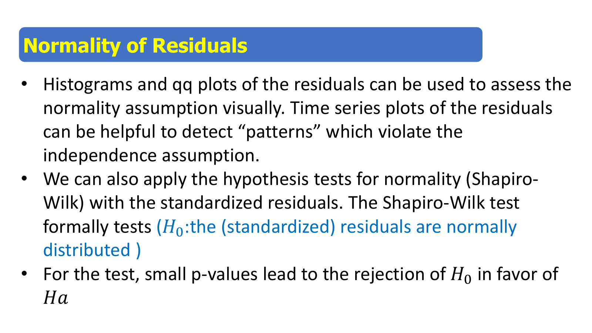
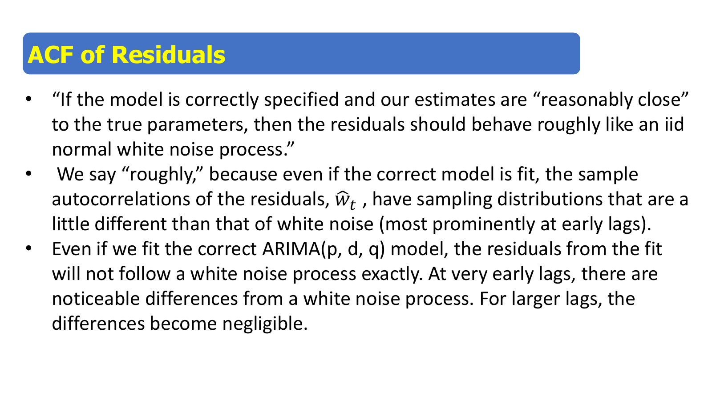
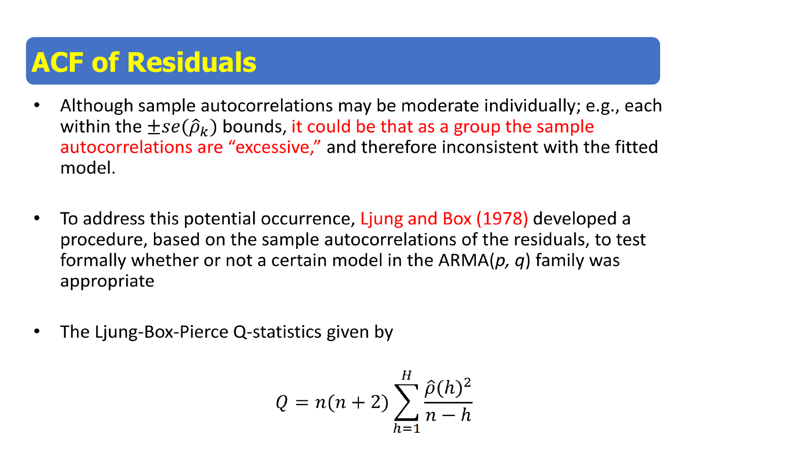
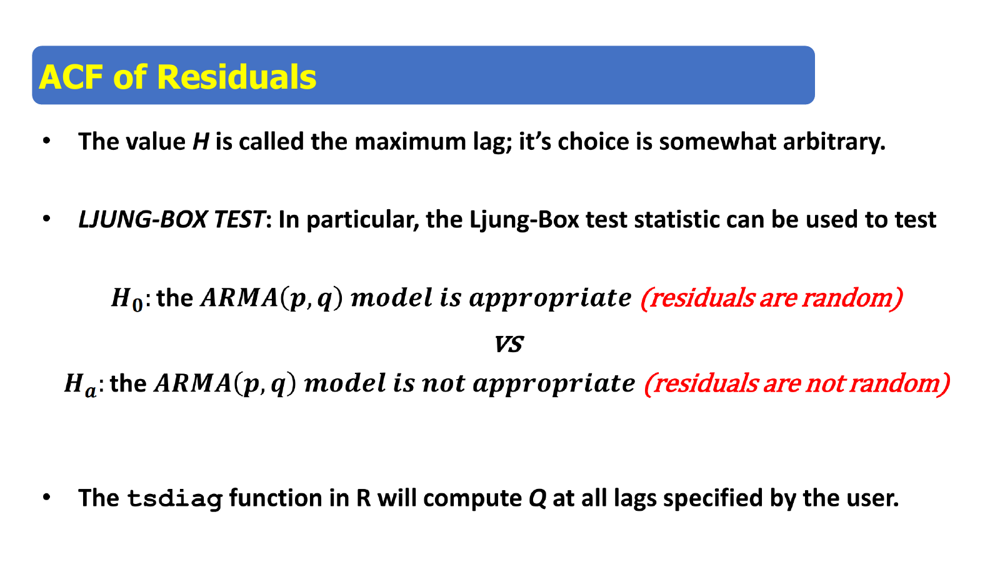
Slide 8 — Diagnostic (Model Validation) และ FORECAST_AND_SARIMA หน้า 1–13
Lesson 7 จบที่ "โมเดลในใจ 2–3 ตัว" พร้อมค่าพารามิเตอร์ บทนี้ตอบว่าตัวไหนใช้ได้จริง และใช้แล้วพยากรณ์อย่างไร การตรวจโมเดลเป็นขั้นที่คนยังต้องทำเองแม้ในยุค auto.arima1 หลักคือ residual ควรเป็น white noise ซึ่งตรวจสามเรื่อง ได้แก่ normal, ไม่มี outlier (standardized residual อยู่ใน ±3) และไม่สัมพันธ์กัน (ACF ของ residual และ Ljung-Box) จากนั้นใช้กับข้อมูลจริงสองชุด อุณหภูมิโลกได้ ARIMA(1,1,1) ส่วนขนาดอนุภาค aerosol เทียบ ARIMA(2,1,0) กับ ARIMA(0,1,1) ระหว่างทางคือวิธีเขียนโมเดลจาก output ซึ่งต้องลบ intercept ออกจาก X ทุกตัว และเหตุผลที่ใส่ d ไว้ในคำสั่ง arima ดีกว่า diff เองก่อน ส่วนสุดท้ายคือการพยากรณ์ ค่าพยากรณ์คือค่าคาดหมายแบบมีเงื่อนไข และความคลาดเคลื่อนโตขึ้นเมื่อพยากรณ์ไกลขึ้น
เรื่องที่ระบุว่าเกี่ยวกับข้อสอบในบทนี้มีดังนี้
ใน regression วิชาอื่น ประเมินโมเดลได้สองด้าน คือความแม่นยำของการพยากรณ์ และการตรวจ assumption time series ต่างตรงที่ไม่ค่อยแก้ assumption แต่ตรวจ10 ถ้าไม่ผ่านก็กลับไปเลือกโมเดลใหม่ สิ่งที่ตรวจคือ residual ซึ่งเป็นส่วนของ X that is not explained by the fitted model หรือค่าจริงลบค่าที่โมเดลทำนาย residual \(\hat w_t\) เป็นตัวแทนของ white noise \(w_t\) ที่สังเกตไม่ได้ เราจึงตรวจ model fit by examining the residuals. ตรรกะคือ ถ้าโมเดลจับความสัมพันธ์ข้ามเวลาไว้ครบแล้ว สิ่งที่เหลือต้องไม่มีโครงสร้างอะไรอีก เช่น ถ้าข้อมูลจริงเป็น AR(1) แต่ฟิตเป็น white noise residual ก็คือข้อมูลเดิมซึ่งยังมี ACF lag 1 สูง แปลว่าโมเดลยังขาดอะไร
ถ้าโมเดลถูกและค่าประมาณใกล้ค่าจริง residual ควรเป็น iid normal คืออิสระกัน, normal, mean 0 และ variance คงที่11 ถ้าไม่เป็นแบบนั้น รูปแบบที่เหลืออยู่ยังบอกทางแก้ เช่น residual ที่ยังมี ACF ที่ lag 12 บอกว่าต้องเพิ่ม seasonal เรื่องแรกที่ตรวจคือ outlier ด้วย standardized residual คือ residual หารด้วย σ̂ เนื่องจาก mean เป็น 0 อยู่แล้ว ค่าจึงควรใกล้ N(0,1)12 ตาม empirical rule ±1 SD ครอบคลุมราว 68% ±2 SD ราว 95% และ ±3 SD ราว 99.7% (ในคลิปพูดว่า "ประมาณ 64%" และ "99.6" ค่าที่ถูกคือ 68% และ 99.7%) สไลด์จึงบอกว่า standardized residuals should fall between −3 and 3. ข้อมูล 150 ค่าคาดว่าจะเกิน ±3 ราว 150 × 0.003 = 0.45 จุด จุดเดียวสองจุดจึงยอมรับได้ แต่ถ้ามีหลายจุดโมเดลอาจไม่เหมาะ13 จำนวนมากแปลว่า error มีหางหนา ซึ่งพบบ่อยในข้อมูลการเงิน
เรื่องที่สองคือ normality ตรวจได้สองทาง คือกราฟ (histogram และ QQ plot) กับการทดสอบ Shapiro-Wilk ซึ่ง H0 คือ standardized residual แจกแจง normal p-value น้อยจึง reject normality สรุปสั้น ๆ คือ "p-value มาก → fail to reject → normal"14 QQ plot มีแกนนอนเป็น quantile ของ normal และแกนตั้งเป็น quantile ของ residual ถ้า normal จุดจะเรียงตามเส้นตรง ถ้าปลายสองข้างแยกออกจากเส้นแปลว่าหางหนากว่า normal
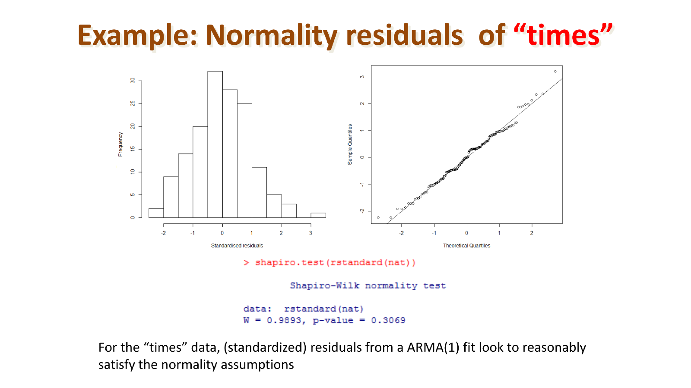
ARMA(1,1) ของ times จาก Lesson 7 ได้ shapiro.test(rstandard(nat)) W = 0.9893, p-value = 0.3069 มากกว่า 0.05 จึงไม่ reject H0 ถือว่า normal QQ plot เรียงตามเส้นเกือบทั้งหมด15 histogram สมมาตรรอบศูนย์ standardized residual ที่ไกลสุดคือ 3.20 ที่ t = 101 เกิน 3 เพียงจุดเดียว ตามที่คำนวณไว้ข้างบนยังยอมรับได้
เรื่องที่สามคือ residual ต้องไม่สัมพันธ์กัน เพราะความสัมพันธ์ถูกเอาไปไว้ในโมเดล ARIMA แล้ว16 ACF ของ residual จึงควรอยู่ในเส้นประทุก lag สไลด์ใช้คำว่า roughly เพราะแม้โมเดลถูก ACF ของ residual ก็มีการแจกแจงต่างจาก white noise เล็กน้อย โดยเฉพาะที่ lag ต้น ๆ เพราะ residual คำนวณจากพารามิเตอร์ที่ประมาณจากข้อมูลชุดเดียวกัน การดูทีละ lag ยังมีปัญหาอีกข้อ คือแต่ละ lag อาจอยู่ในเส้นทั้งหมด แต่ it could be that as a group the sample autocorrelations are “excessive,” คือรวมกันแล้วมากเกินไป Ljung and Box (1978) จึงเสนอสถิติที่รวม lag 1 ถึง H ไว้ด้วยกัน
\(Q=n(n+2)\sum_{h=1}^{H}\dfrac{\hat\rho(h)^2}{n-h}\)
ถ้าโมเดลเหมาะสม Q แจกแจงประมาณ χ² ที่ df = H − p − q การยกกำลังสองทำให้ค่าบวกและลบไม่หักล้างกัน และน้ำหนัก 1/(n − h) ชดเชยที่ lag สูงมีคู่ข้อมูลน้อยกว่า ในทางปฏิบัติดูแค่ p-value17 สมมุติฐานที่ต้องจำคือ H0 ARMA(p,q) เหมาะสม (residuals are random) และ H1 ไม่เหมาะสม (residuals are not random) การทดสอบนี้ตรวจว่าโมเดลเหมาะหรือไม่ ไม่ได้ตรวจแค่ว่าสัมพันธ์กันหรือเปล่า18 H คือ lag สูงสุดซึ่งเลือกได้ค่อนข้างอิสระ tsdiag() ของ TSA คำนวณ Q ทุก H ตั้งแต่ 1 ถึงค่าที่กำหนด และทุกค่าควรมี p-value มาก19
n = 100 residual ของ MA(1) มี ACF ที่ lag 1, 2 เท่ากับ 0.2 และ 0.1 ใช้ H = 2
\(Q=100(102)\left(\dfrac{0.04}{99}+\dfrac{0.01}{98}\right)=10200(0.000404+0.000102)=5.16\)
df = H − q = 2 − 1 = 1 ค่าวิกฤต χ²(1) ที่ 5% คือ 3.84 เนื่องจาก 5.16 > 3.84 จึง reject H0 โมเดลยังไม่เหมาะสม
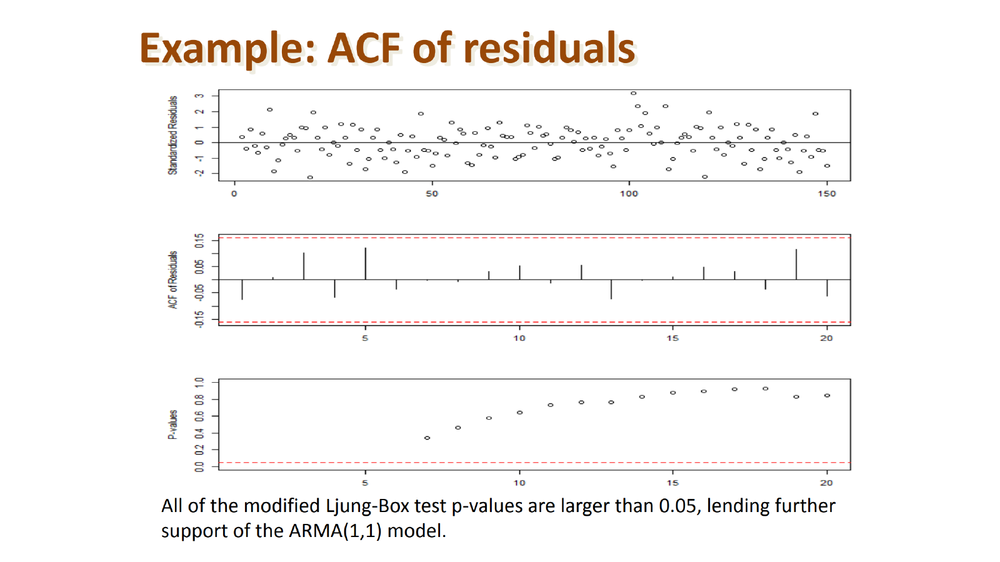
tsdiag(nat, gof.lag = 20) ให้สามกราฟ20 กราฟแรกคือ standardized residual ตามเวลา มีจุดราว t = 100 เกิน 3 นิดเดียว ซึ่งยังรับได้ ("ไม่เป็นไร") กราฟที่สองคือ ACF ของ residual ค่าที่ lag 1–3 คือ −0.072, 0.007, 0.109 อยู่ในเส้นทั้งหมด กราฟที่สามคือ p-value ของ Ljung-Box แต่ละ H เทียบเส้นประ 0.05 คำนวณเองด้วย Box.test(residuals(nat), lag = H, type = "Ljung", fitdf = 2) ได้ 0.139, 0.644, 0.881, 0.843 ที่ H = 5, 10, 15, 20 เกิน 0.05 ทุกค่า ARMA(1,1) จึงผ่าน ถ้ามีจุดอยู่ใต้เส้นแค่สองจุดยังพอรับได้21 และ arima() ไม่ตรวจเรื่องเหล่านี้ให้อัตโนมัติ ต้องสั่งเอง22




ข้อมูลอุณหภูมิเป็น "full data analysis" ครบทุกขั้นที่ข้อสอบภาคปฏิบัติจะถาม คือ plot, ตัดสิน d, ACF/PACF, AIC/BIC, estimation, เขียนโมเดล และ diagnostic ตัวข้อมูลคือค่าเบี่ยงเบนของอุณหภูมิเฉลี่ยรายปี 1856–1997 จำนวน n = 14223 ชุดเดียวกับที่ใช้ใน Lesson 2–3 แต่ Lesson 3 ใช้ช่วงตั้งแต่ปี 1900 ข้อมูลรายปีแบบนี้ "อาจจะไม่ค่อยมี seasonal"
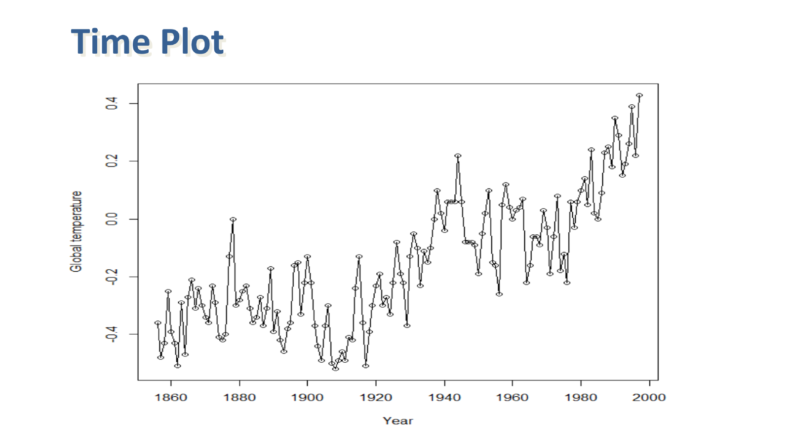
อนุกรมอยู่ราว −0.4 ในช่วงปี 1860–1910 แล้วขึ้นมาราว 0.4 ปลายทศวรรษ 1990 จึงมี trend ขาขึ้น ความแกว่งรอบ trend ใกล้เคียงกันตลอด จึงไม่ต้อง take log24

ACF = 0.817, 0.717, 0.669 และยังเกิน 0.2 ถึง lag 20 สไลด์สรุปว่า "probably not an ARMA process" ความสัมพันธ์สูงนี้ไม่ได้มาจาก AR แต่มาจากความไม่นิ่งที่เกิดจาก trend25 จึงใช้ d = 1
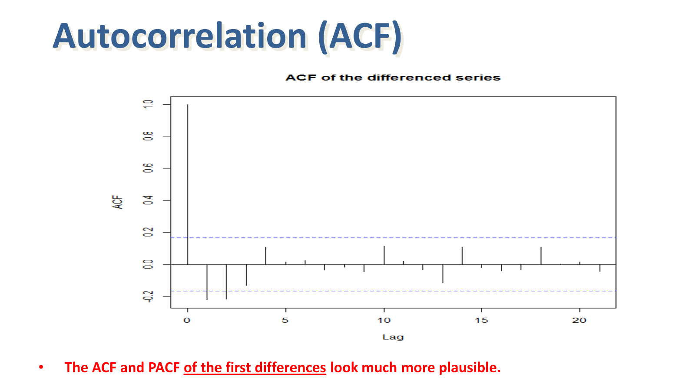
หลัง difference ACF = −0.223, −0.217, −0.132, 0.107 ทะลุเส้น ±0.168 (2/√141) ที่ lag 1–2 แล้วอยู่ในเส้น จึงอาจเป็น MA(2) สไลด์เขียนว่า ACF และ PACF of the first differences look much more plausible. คือดูเป็นอนุกรมนิ่งแล้ว

PACF = −0.223, −0.281, −0.293, −0.107 ทะลุเส้นที่ lag 1–3 จึงอาจเป็น AR(3) candidate จึงมี p ≤ 3 และ q ≤ 2 ในใจมีราว 2–3 โมเดล แล้วให้ AIC/BIC ช่วยเลือก26
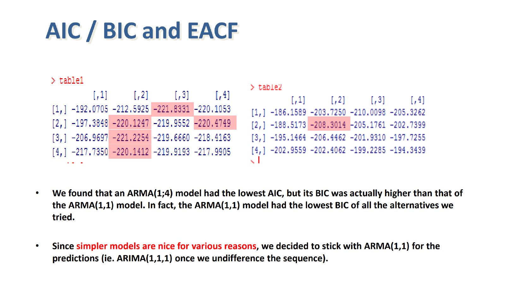
ตารางสร้างแบบเดียวกับ Lesson 7 (แถว p = 0–3 คอลัมน์ q = 0–3) AIC ต่ำสุดอยู่ช่อง [1,3] = −221.83 คือ ARMA(0,2) กลุ่มที่ใกล้กันคือ ARMA(2,1) −221.23, ARMA(1,3) −220.47 และ ARMA(1,1) −220.12 ส่วน BIC ต่ำสุดคือ [2,2] = −208.30 คือ ARMA(1,1) สไลด์เขียนว่า "ARMA(1;4) model had the lowest AIC" ซึ่งไม่ตรงกับตาราง (ตารางมี q ถึง 3 เท่านั้น) น่าจะเหลือจากเวอร์ชันเก่าของสไลด์27 ข้อสรุปของสไลด์ยังใช้ได้ คือเลือก ARMA(1,1) ของ ∇X_t เพราะ simpler models are nice for various reasons จึงได้ ARIMA(1,1,1)

output นี้ฟิต ARMA(1,1) กับผลต่าง (แบบ diff ก่อน) ขั้นแปลงตัวเลขเป็นสมการอยู่ในกล่องข้างล่าง ซึ่งเป็นรูปแบบที่ข้อสอบให้เขียน
arima(dif, order = c(1,0,1), method = "ML"): ar1 = 0.3481, ma1 = −0.8278, intercept = 0.0049, σ² = 0.01156
φ มาจาก ar1 และ θ มาจาก ma1 ถ้า ma1 ติดลบ θ ก็ติดลบ29 intercept คือ mean ของ ∇X_t
\(\nabla X_t-0.0049=0.3481(\nabla X_{t-1}-0.0049)-0.8278w_{t-1}+w_t\)
\(\hat\sigma=\sqrt{0.01156}=0.1075\)
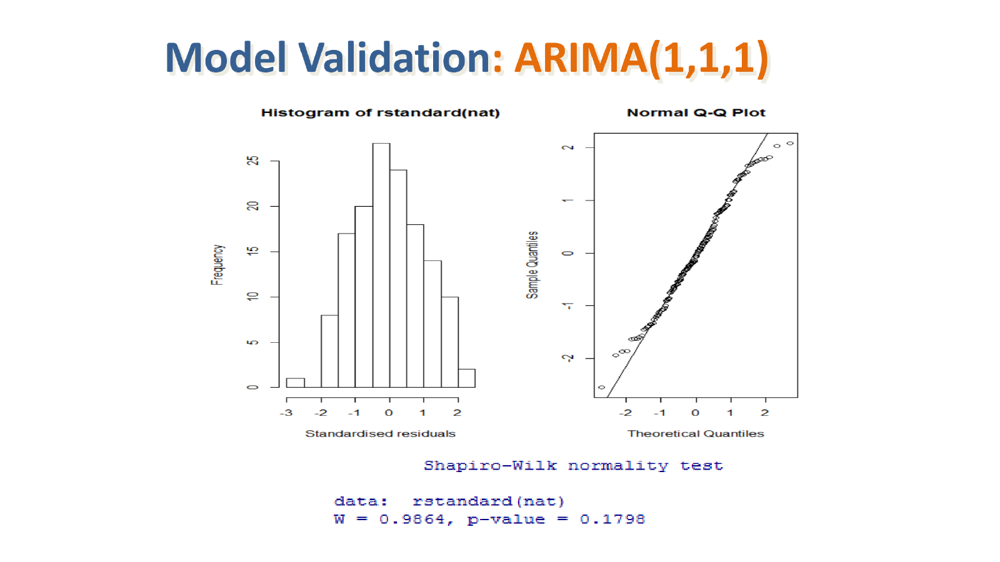
Shapiro-Wilk ได้ W = 0.9864, p-value = 0.1798 มากกว่า 0.05 จึงถือว่า normal histogram สมมาตรรอบศูนย์ และ QQ plot เรียงตามเส้น ยกเว้นจุดปลายล่างสองสามจุดที่ต่ำกว่าเส้นเล็กน้อย31

standardized residual อยู่ในช่วง ±3 ทั้งหมด ACF ของ residual อยู่ในเส้น และ p-value ของ Ljung-Box (fitdf = 2) ที่ H = 5, 10, 15, 20 คือ 0.182, 0.538, 0.693, 0.823 เกิน 0.05 ทุกค่า จุดช่วง lag ต้น ๆ ต่ำกว่าส่วนอื่นแต่ยังอยู่เหนือเส้น 0.05 ARIMA(1,1,1) จึงผ่าน32 โค้ดที่แจกไม่มีส่วน diagnostic ของข้อมูลนี้ การบ้านคือ copy จากส่วนของ times มาเติมเอง ข้อสรุปบนสไลด์ 24 รวมสามหลักฐาน คือ residual ไม่มี correlation ที่มีนัยสำคัญ, Shapiro-Wilk ให้ p-value สมเหตุสมผล และ QQ plot ใกล้ normal ดังนั้น ARIMA(1,1,1) เพียงพอ รูปแบบการสรุปนี้ใช้เป็นแม่แบบตอบข้อสอบภาคปฏิบัติได้
คำถามที่ตามมาคือ ฟิตโมเดลนี้ได้สองแบบ แบบแรก arima(diff(data), order = c(p,0,q)) คือ difference เองก่อน แบบที่สอง arima(data, order = c(p,1,q)) ให้ R difference ภายใน สไลด์ 18 บอกว่าสองแบบไม่เท่ากัน เพราะแบบแรกมีค่าคงที่ แบบที่สองไม่มี และแบบที่สองสะดวกกว่าถ้าต้องการค่าพยากรณ์หรือค่า fitted บนข้อมูลเดิม

แบบ diff ก่อนได้ ar1 = 0.3481, ma1 = −0.8278, intercept = 0.0049, σ² = 0.01156, aic = −220.12 แบบ d ใน arima ได้ ar1 = 0.3326, ma1 = −0.7887 ไม่มี intercept, σ² = 0.01185, aic = −218.76 สองแบบไม่เหมือนกัน ต่างกันนิดหนึ่ง33 เพราะแบบแรกประมาณ mean ของผลต่าง (drift) ด้วย
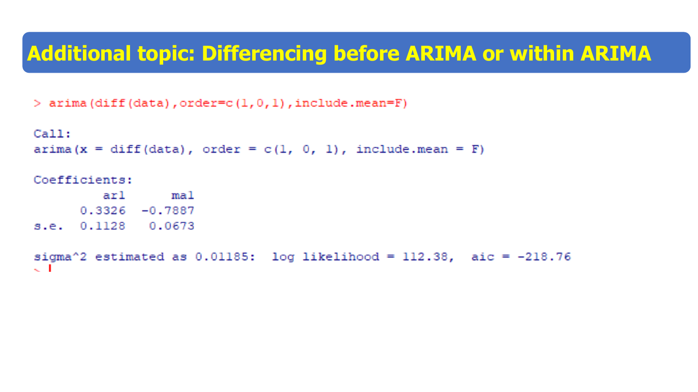
เมื่อใส่ include.mean = FALSE ในแบบแรก ได้ ar1 = 0.3326, ma1 = −0.7887, σ² = 0.01185 เท่ากับแบบที่สองทุกตัว34 จึงยืนยันว่าความต่างมาจาก intercept อย่างเดียว แบบที่แนะนำคือใส่ d ในคำสั่ง เพราะแบบแรก forecast ได้ค่าผลต่าง ต้อง undifference เอง และเป็นจุดที่พลาดกันบ่อย35
predict(f1, n.ahead = 3)$pred = −0.0791, −0.0243, −0.0052 ถ้านำไปเทียบกับอุณหภูมิจริงที่ราว 0.4 จะผิดทันที
ปี 1997 = 0.43 จึงได้ 0.43 − 0.0791 = 0.3509, 0.3509 − 0.0243 = 0.3265, 0.3265 − 0.0052 = 0.3213 ใน R คือ diffinv(pred, xi = data[142])
predict(arima(t, c(1,1,1)), n.ahead = 3) = 0.3435, 0.3147, 0.3052 ใกล้กันแต่ไม่เท่า เพราะแบบแรกมี drift 0.0049
diffinv(..., xi = singapur[28]) สมัยก่อนถ้าไม่ undifference ผลจะต่างกันมาก และข้อสรุปคือใช้แบบใส่ d ในคำสั่ง36มีกับดักใน R อีกข้อ package TSA มีฟังก์ชัน arima ของตัวเองที่บังฟังก์ชันของ stats เมื่อรัน library(TSA) (ซึ่ง R_codes เรียกเพื่อใช้ tsdiag) ค่า aic ที่พิมพ์ใน output จะต่ำกว่าของ stats 2 หน่วย เช่น ข้อมูลอุณหภูมิแบบ diff ก่อน stats::arima พิมพ์ −220.12 แต่ TSA::arima พิมพ์ −222.12 ส่วน AIC(fit) ให้ −220.12 เท่ากันทั้งสองแบบ ถ้าเทียบหลายโมเดลให้ใช้ค่าจากที่มาเดียวกันเสมอ หรือใช้ AIC() แบบที่ตาราง AIC ในโค้ดทำ

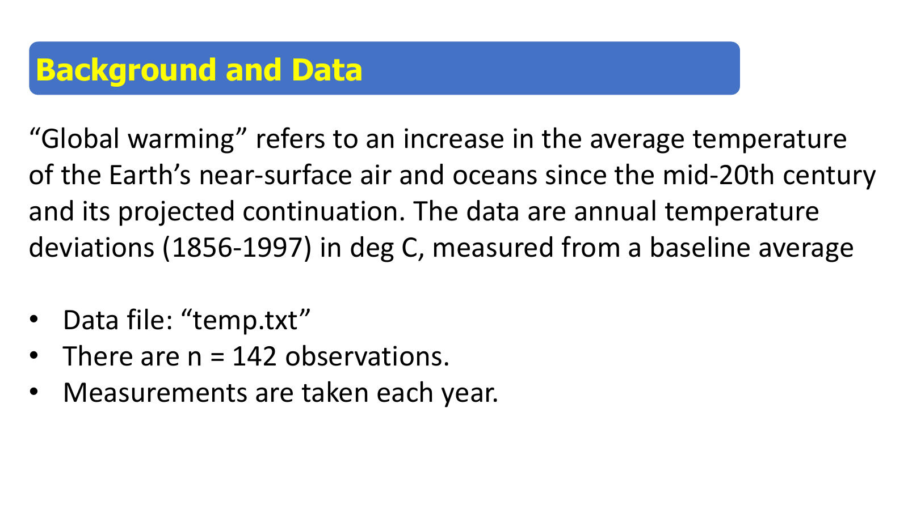
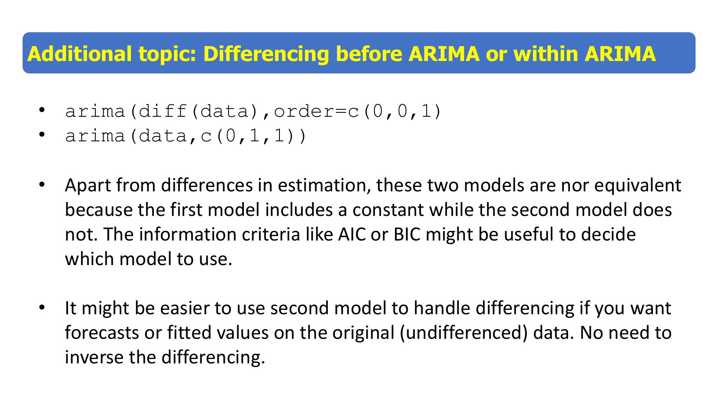

ข้อมูลชุดที่สองมาจากงานวิศวกรรม37 ข้อมูลยาว 559 ค่า และ candidate สองตัวต้องตัดสินกันด้วย diagnostic เครื่อง spray dryer ฉีดของเหลวข้นเข้าห้องอบด้วยความเร็วสูง ของเหลวแตกเป็นละอองเมื่อเจอแก๊สร้อน ความชื้นระเหยไปเหลืออนุภาคแห้ง และขนาดอนุภาคถูกวัดห่างเท่ากันตามเวลา เป้าหมายคือสร้างสมการทำนายขนาดอนุภาคตามเวลา ซึ่งเป็นขั้นแรกของการควบคุมกระบวนการผลิตให้ได้ขนาดคงที่ สไลด์คาดว่าโมเดลมักออกมาเป็น autoregressive

ค่าอยู่ระหว่างราว 110 ถึง 118 เคลื่อนขึ้นลงเป็นช่วงยาว ค่าติดกันใกล้กันมาก สไลด์สรุปว่ามี autocorrelation บวกสูง และ does not seem to be a significant trend หรือ any obvious seasonal pattern แต่การเดินเป็นช่วงยาวโดยไม่กลับมาที่ค่าเฉลี่ยคือลักษณะของอนุกรมไม่นิ่งแบบ random walk

ACF สูงมากและลดช้า ยังเกิน 0.5 ที่ lag 27 สไลด์จึงสรุปว่าไม่นิ่ง และ difference the data.

หลัง difference ACF มีแท่งเดียวที่ lag 1 ราว −0.35 แล้วส่วนใหญ่อยู่ในเส้น ±0.085 (n = 558) จึงแนะนำ MA(1) for the differenced data. และดู PACF ต่อเพื่อหาทางเลือกอื่น
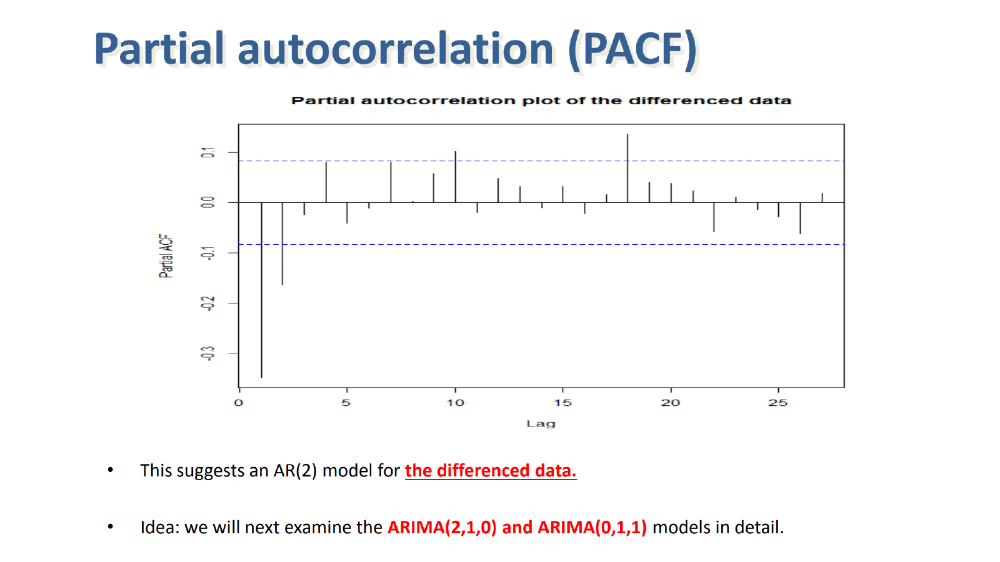
PACF ทะลุเส้นที่ lag 1 (ราว −0.34) และ lag 2 (ราว −0.17) แล้วตัด จึงแนะนำ AR(2) ของผลต่าง ได้ candidate สองตัว คือ ARIMA(2,1,0) และ ARIMA(0,1,1) ตัวกลางเป็น 1 เพราะมี differencing38
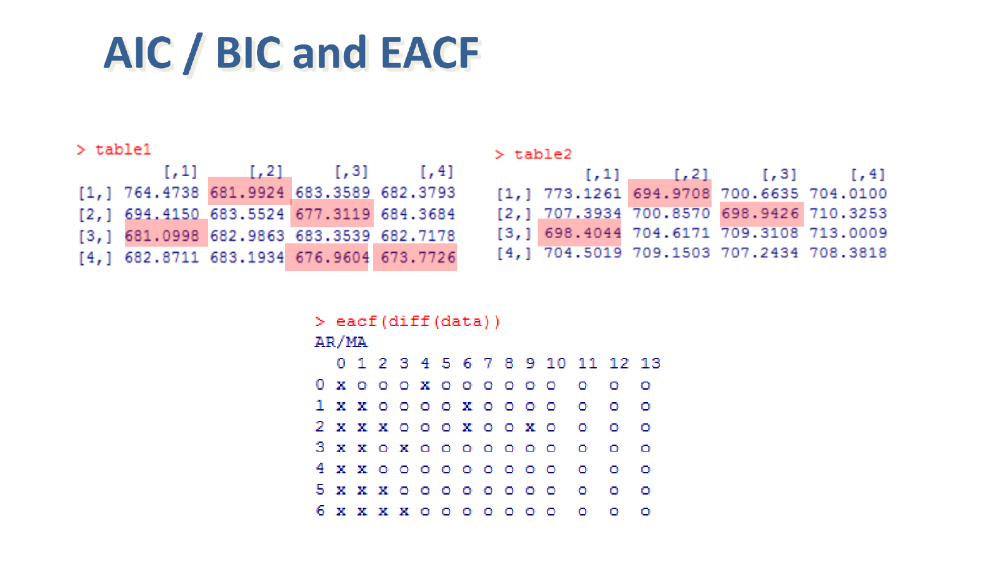
AIC ต่ำสุดในตารางคือ ARMA(3,3) 673.77 ตามด้วย ARMA(3,2) 676.96 แต่ BIC ต่ำสุดคือ ARMA(0,1) 694.97 และ ARMA(2,0) 698.40 ซึ่งตรงกับ candidate จาก ACF/PACF EACF มีลิ่ม o เริ่มที่ (0,1) สอดคล้องกับ MA(1) บทต่อจากนี้จะใช้ auto.arima แทนการทำตารางเหล่านี้39

output นี้ฟิต AR(2) กับผลต่างของ aerosol ค่าสัมประสิทธิ์ทั้งสองติดลบ แปลว่าผลต่างที่ขึ้นมักตามด้วยผลต่างที่ลง การเขียนเป็นสมการอยู่ในกล่องข้างล่าง
ar1 = −0.4064, ar2 = −0.1649, intercept = −0.0050, σ² = 0.1956
\(\nabla X_t+0.005=-0.4064(\nabla X_{t-1}+0.005)-0.1649(\nabla X_{t-2}+0.005)+w_t\), \(\hat\sigma=\sqrt{0.1956}=0.4423\) (ลบ intercept −0.005 จึงกลายเป็นบวก 0.005)
ค่าคงที่ \(=-0.005(1+0.4064+0.1649)=-0.0079\) ได้ \(X_t=-0.0078+0.5936X_{t-1}+0.2415X_{t-2}+0.1649X_{t-3}+w_t\) ในข้อสอบไม่ต้องทำถึงขั้นนี้41
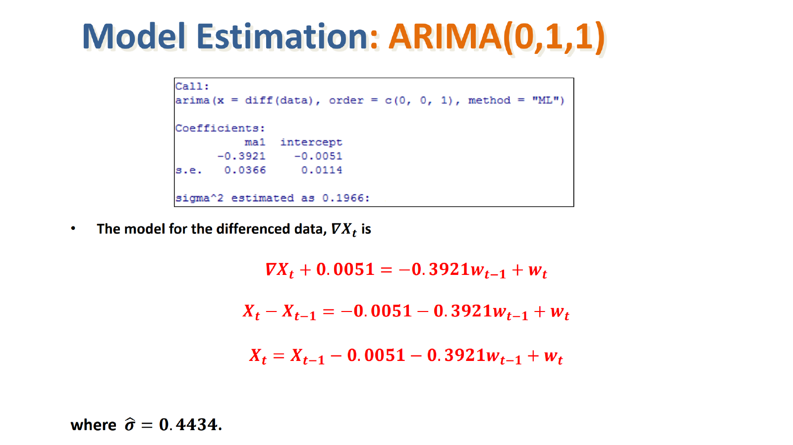
output ได้ ma1 = −0.3921, intercept = −0.0051, σ² = 0.1966 เขียนได้ \(\nabla X_t+0.0051=-0.3921w_{t-1}+w_t\), \(\hat\sigma=0.4434\) หรือ \(X_t=X_{t-1}-0.0051-0.3921w_{t-1}+w_t\)42 σ² ของสองโมเดลใกล้กันมาก (0.1956 กับ 0.1966) ถ้าดีเท่ากันจะเลือก ARIMA(0,1,1) ตามหลัก parsimony เพราะมี θ ตัวเดียวและเขียนง่ายกว่า43 แต่ต้องดู diagnostic ก่อน

histogram แคบและสูงกว่า normal มีหางยาว QQ plot ปลายทั้งสองข้างแยกจากเส้นชัดเจน และ standardized residual สูงสุด 4.41 รันเองได้ Shapiro-Wilk p-value ใกล้ 0 จึงไม่ normal ทั้งสองโมเดล (ARIMA(0,1,1) ก็ได้ใกล้ 0) สไลด์และคลิปไม่ได้พูดถึงข้อนี้ เป็นตัวอย่างว่าข้อมูลจริงมักผ่านไม่ครบทุกข้อ
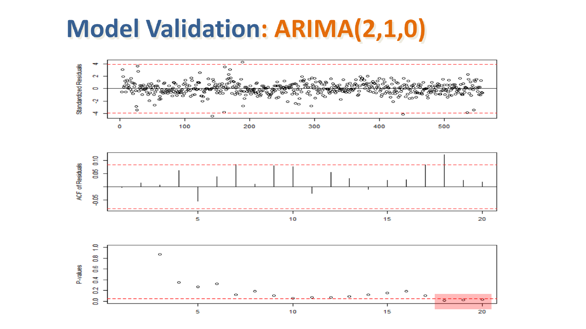
standardized residual มีบางจุดเกิน ±4 ACF ของ residual ส่วนใหญ่อยู่ในเส้น และ p-value ของ Ljung-Box ต่ำกว่า 0.05 เฉพาะ lag ท้าย ๆ ที่สไลด์ไฮไลต์ รันเองที่ H = 18, 19, 20 ได้ 0.015, 0.020, 0.027 ไม่กี่จุดแบบนี้ยังพอรับได้44

รูปร่างแทบเหมือน ARIMA(2,1,0) หางหนาทั้งสองข้าง และ standardized residual สูงสุด 4.40 ด้าน normality สองโมเดลจึงไม่ต่างกัน ต้องใช้เกณฑ์อื่นตัดสิน

p-value ของ Ljung-Box ต่ำกว่า 0.05 หลายจุดตั้งแต่ราว lag 7 เป็นต้นไป รันเองได้ 0.043 ที่ H = 7, 0.015 ที่ H = 10 และ 0.007 ที่ H = 20 แปลว่า residual ยังมี autocorrelation รวมที่ MA(1) จับไม่หมด
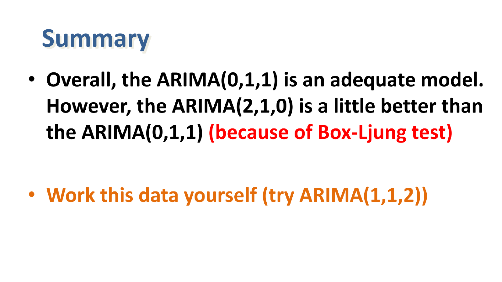
ข้อสรุปคือ ARIMA(0,1,1) พอใช้ได้ แต่ ARIMA(2,1,0) ดีกว่าเล็กน้อย (because of Box-Ljung test) แม้มีพารามิเตอร์มากกว่า กรณีนี้หลัก parsimony ใช้ไม่ได้เพราะ diagnostic ไม่เท่ากัน การบ้านบนสไลด์คือลอง ARIMA(1,1,2) รันแล้วได้ ar1 = 0.9445, ma1 = −1.3755, ma2 = 0.4341, σ² = 0.1935 AIC ต่ำกว่าทั้งสองตัว และ Ljung-Box ที่ H = 5, 10, 15, 20 คือ 0.052, 0.138, 0.272, 0.106 ผ่านทุกค่า จึงดีกว่าทั้งสอง แต่ราก AR 1/0.9445 = 1.059 ใกล้รากหนึ่งของ MA (1.130) โมเดลจึงเกือบมีตัวประกอบร่วม ควรระวังเรื่อง redundancy
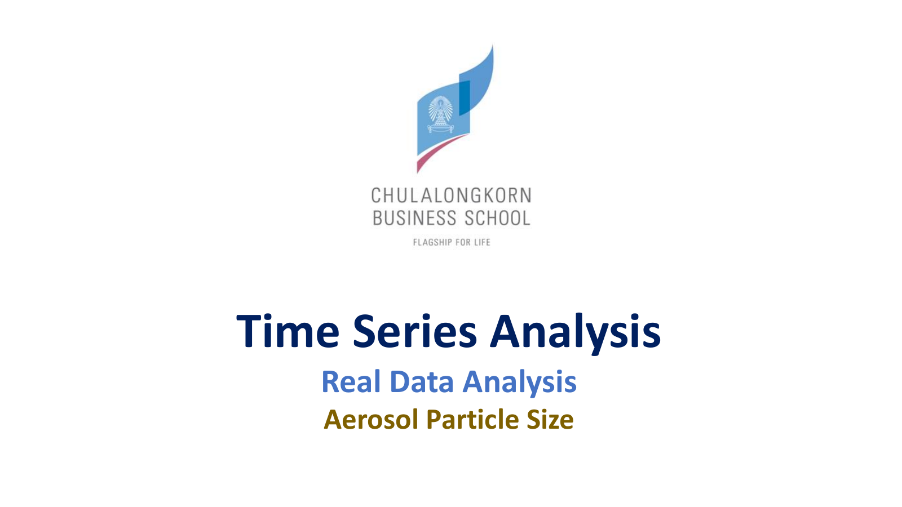
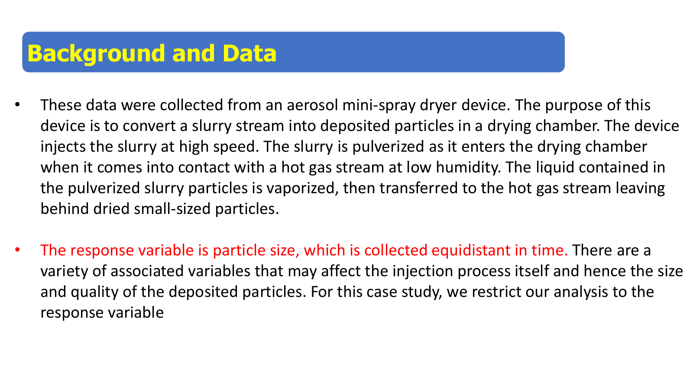
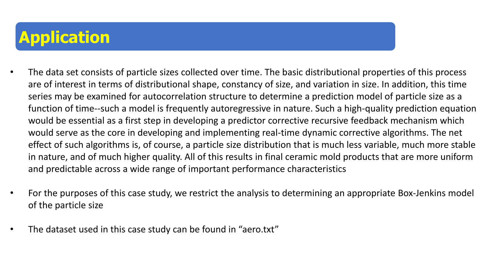
สไลด์ชุด FORECAST_AND_SARIMA หน้า 1–13 อยู่ในโฟลเดอร์ CLASS 8 แต่ในคลิปไม่ได้ลงรายละเอียด การพยากรณ์ในทางปฏิบัติใช้คำสั่ง forecast คำสั่งเดียว และการเลือกและตรวจโมเดลสำคัญกว่า45 multi-step ก็ยังไม่ได้สอนละเอียด46 ส่วนนี้อธิบายสไลด์ให้ครบ เพราะความเข้าใจว่าค่าพยากรณ์มาจากไหนช่วยให้อ่าน output และช่วงพยากรณ์ได้ถูก เนื้อหาตรงกับหนังสือ Section 3.5 ซึ่งเป็นทฤษฎีเบื้องหลังคำสั่ง predict() และ forecast()
คำถามคือ เมื่อเห็นข้อมูลถึงเวลา n แล้ว ค่าเวลา n + m ควรเดาเป็นเท่าไร คำตอบที่ดีที่สุด (ทำให้ความคลาดเคลื่อนกำลังสองเฉลี่ยต่ำสุด) คือค่าคาดหมายแบบมีเงื่อนไข \(E(X_{n+m}\mid X_1,\dots,X_n)\) ปัญหาคือการหาค่านี้ต้องรู้การแจกแจงร่วมของทุกตัวแปร ซึ่งปกติไม่รู้ ถ้าข้อมูลเป็น Gaussian ค่าคาดหมายแบบมีเงื่อนไขเป็นฟังก์ชันเชิงเส้นของ \(X_1,\dots,X_n\) และ variance แบบมีเงื่อนไขไม่ขึ้นกับค่าที่เห็น ถ้าไม่ใช่ Gaussian ก็ยังใช้ best linear unbiased predictor (BLUP) ได้ ซึ่งอาจไม่ดีที่สุดในทุกตัวพยากรณ์ แต่คำนวณได้ และต้องรู้เพียงโครงสร้าง correlation
BLUP หนึ่งก้าวเขียนเป็น \(X_{n+1}^n=\phi_{n,1}X_n+\dots+\phi_{n,n}X_1\) เลือกน้ำหนักให้ \(E(X_{n+1}^n-X_{n+1})^2\) ต่ำสุด หาอนุพันธ์แล้วตั้งเท่าศูนย์ได้ระบบสมการ \(\Gamma\phi_n=\gamma_n\) ซึ่งหน้าตาเหมือน Yule-Walker ใน Lesson 7 เช่น n = 1 ได้ \(\gamma_0\phi_{1,1}=\gamma_1\) จึงได้ \(\phi_{1,1}=\rho_1\) คือพยากรณ์ด้วย \(\rho_1X_1\) ระบบสมการนี้แก้แบบวนซ้ำได้ด้วย Durbin-Levinson These do not require matrix inversion. แต่มีวิธีที่ง่ายกว่า คือเขียน \(X_{n+1}\) เป็น (ผลรวมเชิงเส้นของ X ที่เห็นแล้ว) + (ส่วนที่ไม่สัมพันธ์กับ X ในอดีต) ส่วนแรกคือ BLUP ส่วนที่สองคือความคลาดเคลื่อน สำหรับ AR(p) \(X_{n+1}=[\phi_1X_n+\dots+\phi_pX_{n+1-p}]+w_{n+1}\) จึงได้ \(X_{n+1}^n=\phi_1X_n+\dots+\phi_pX_{n+1-p}\) คือแทนค่าที่รู้ลงในสมการแล้วตั้ง shock ในอนาคตเป็นศูนย์ หน้า 6–8 ของไฟล์เป็นหน้าว่าง ตัวอย่างที่ใช้แทนอยู่ในกล่องคำนวณข้างล่าง
\(X_t-50=0.8(X_{t-1}-50)+w_t\), σ² = 4 และค่าสุดท้าย \(X_n=60\)
\(X_{n+1}^n=50+0.8(10)=58\) ความคลาดเคลื่อนคือ \(w_{n+1}\) MSPE = σ² = 4
\(X_{n+2}=50+0.8(X_{n+1}-50)+w_{n+2}\) แทน \(X_{n+1}=58+w_{n+1}\) ได้ \(X_{n+2}^n=50+0.64(10)=56.4\) ความคลาดเคลื่อน \(w_{n+2}+0.8w_{n+1}\) MSPE = 4(1 + 0.64) = 6.56
\(X_{n+h}^n=50+0.8^h(10)\) เข้าหา 50 และ MSPE \(=\sigma^2(1+\phi^2+\dots+\phi^{2(h-1)})\to\sigma^2/(1-\phi^2)=4/0.36=11.1\)
สำหรับ ARMA ทั่วไป \(X_{n+1}=\phi_1X_n+\dots+\phi_pX_{n+1-p}+\theta_1w_n+\dots+\theta_qw_{n+1-q}+w_{n+1}\) ส่วนแรกรู้ค่าแล้ว ส่วนสุดท้ายไม่สัมพันธ์กับอดีต ที่ยังติดคือส่วนกลาง \(\theta_1w_n+\dots\) ซึ่งเป็น shock ในอดีตที่ไม่เห็นโดยตรง คำตอบเชื่อมกับ Lesson 7 ถ้าโมเดล invertible \(w_t\) เขียนได้เป็นผลรวมเชิงเส้นของ \(X_t,X_{t-1},\dots\) เมื่อ n ใหญ่ ตัดที่ \(X_1\) ได้ ส่วนกลางจึงคำนวณได้ประมาณ ในทางปฏิบัติใช้ residual ของโมเดลแทน w ในอดีต นี่คือคำตอบเชิงปฏิบัติของคำถาม "ทำไมต้อง invertible" ใน Lesson 7
φ̂ = −0.6169, θ̂ = −0.7233, μ̂ = 0.0235, ค่าสุดท้าย \(X_{150}=-2.9693\), residual สุดท้าย \(\hat w_{150}=-1.9058\)
\(X_{151}^{150}=\mu+\phi(X_{150}-\mu)+\theta\hat w_{150}=0.0235+(-0.6169)(-2.9928)+(-0.7233)(-1.9058)\)
\(=0.0235+1.8463+1.3785=3.248\) ตรงกับ predict(nat, n.ahead = 1)
\(X_{152}^{150}=0.0235+(-0.6169)(3.248-0.0235)=-1.966\)
พยากรณ์หลายก้าวต่อยอดจาก one-step สองก้าวคือเขียนสมการของ \(X_{n+2}\) แล้วแทน \(X_{n+1}=X_{n+1}^n+w_{n+1}\) พจน์ \(w_{n+1}\) ปรากฏสองที่ คือผ่าน φ₁ และผ่าน θ₁ รวมกันเป็น \((\theta_1+\phi_1)w_{n+1}\) ความคลาดเคลื่อนสองก้าวจึงเป็น \(w_{n+2}+(\theta_1+\phi_1)w_{n+1}\) และ MSPE \(=\sigma^2[1+(\theta_1+\phi_1)^2]\ge\sigma^2\) ตรวจกับ times ได้ \(1.57[1+(-0.6169-0.7233)^2]=1.57(2.796)=4.390\) ราก \(=2.095\) ตรงกับ se ของก้าวที่สองที่ R รายงาน โดยสรุป MSPE เพิ่มขึ้นตามระยะพยากรณ์ ช่วงพยากรณ์ (prediction interval) จึงกว้างขึ้น สำหรับอนุกรมนิ่ง ความกว้างเข้าหาค่าคงที่ (times: se ก้าวที่ 20 = 2.474 เกือบเท่า SD ของข้อมูล 2.468) แต่สำหรับอนุกรมที่มี d ≥ 1 ความกว้างโตต่อไปไม่สิ้นสุด เพราะ variance ของ random walk โตตามเวลา (Lesson 1)


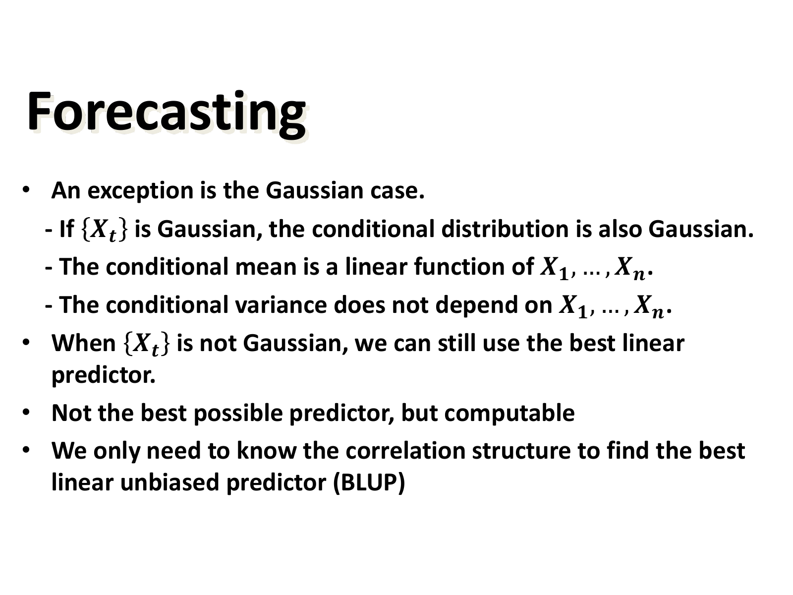

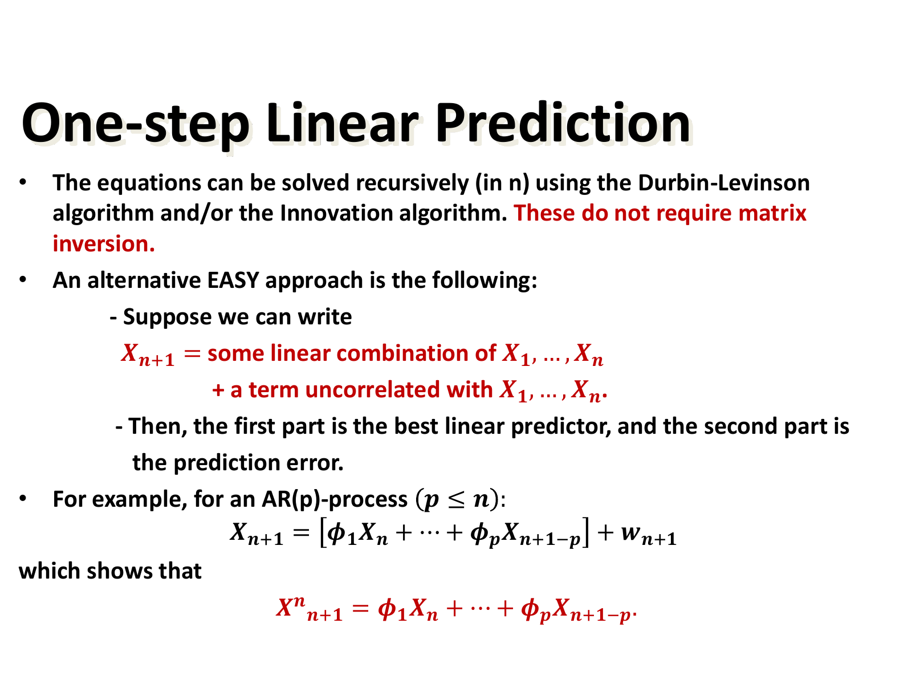
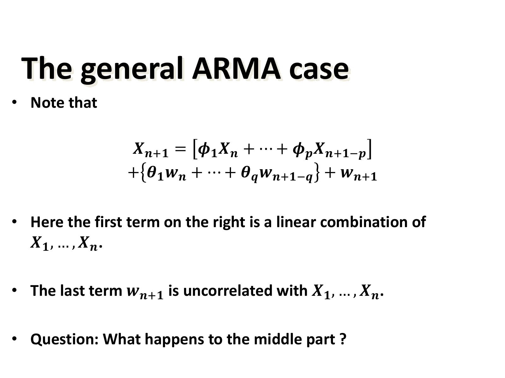

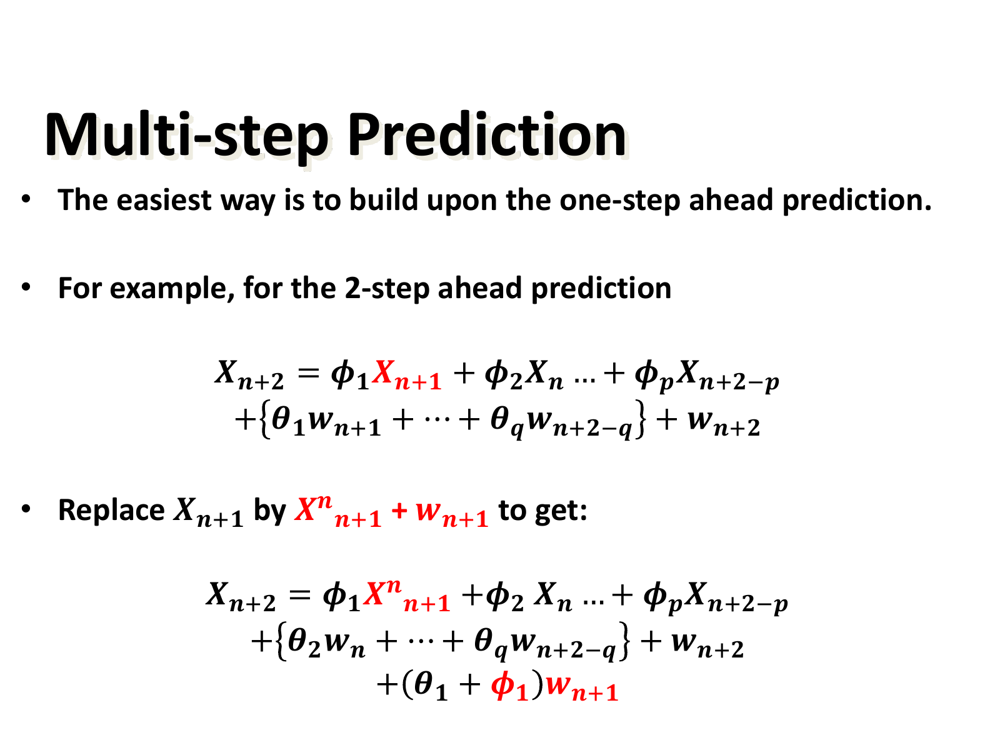

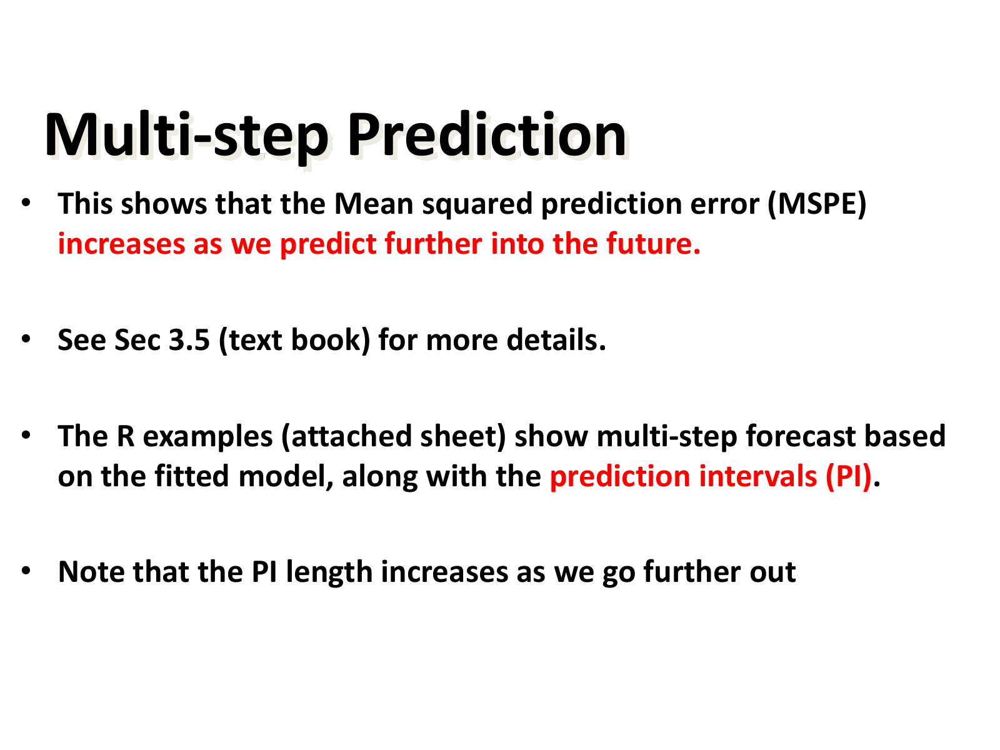
ใน R ใช้ predict(nat, n.ahead = 20) พยากรณ์ 20 ก้าว ได้สองส่วน คือ $pred (ค่าพยากรณ์) และ $se (รากของ MSPE) prediction interval 95% คือ pred ± 1.96 se โดย 1.96 มาจาก qnorm(0.975, 0, 1) ช่วงนี้สมมุติว่า error เป็น normal จึงต้องตรวจ normality ในตอน 1 ก่อน กับข้อมูล times ได้ผลดังนี้
ก้าว pred se lower upper 1 3.248 1.253 0.792 5.704 2 -1.966 2.095 -6.072 2.141 3 1.251 2.337 -3.331 5.832 10 -0.018 2.474 -4.868 4.831 20 0.023 2.474 -4.826 4.873
ค่าพยากรณ์แกว่งสลับเครื่องหมายแล้วเข้าหา 0.0235 ส่วน se เพิ่มจาก 1.253 เป็น 2.474 แล้วคงที่ ตรงตามทฤษฎีในตอน 4 ข้อมูลที่มี d = 1 ให้ภาพต่างออกไป อุณหภูมิ predict(arima(t, order = c(1,1,1)), n.ahead = 5) ได้ 0.3435, 0.3147, 0.3052, 0.3020, 0.3009 สำหรับปี 1998–2002 ตรวจหนึ่งก้าวด้วยมือได้ \(\hat X_{1998}=X_{1997}+\phi(X_{1997}-X_{1996})+\theta\hat w_{1997}=0.43+0.3326(0.21)-0.7887(0.1982)=0.3435\) se = 0.109, 0.124, 0.131, 0.136, 0.141 โตต่อไปเรื่อย ๆ เพราะ d = 1 ส่วน aerosol ARIMA(2,1,0) ได้ 112.365, 112.332 และ 112.325 ที่ก้าว 12 ใกล้ค่าสุดท้าย 112.185 เพราะผลต่างที่พยากรณ์เข้าหา 0 และ se เพิ่มจาก 0.442 เป็น 1.026
ถ้าข้อมูลถูกแปลงด้วย log ส่วนท้ายของ R_codes ที่ comment ไว้แสดงวิธี คือฟิต arima(log(data), order = c(0,1,1)) แล้ว exp(predict(...)$pred) เพื่อแปลงกลับ (Lesson 7) ช่วงพยากรณ์ก็แปลงด้วย exp ทั้งสองขอบ ช่วงที่ได้จึงไม่สมมาตรรอบค่าพยากรณ์ เช่น log scale 5 ± 0.2 ได้ [e^4.8, e^5.2] = [121.5, 181.3] รอบ e^5 = 148.4 ซึ่งห่างลงล่าง 26.9 แต่ขึ้นบน 32.9
nat <- arima(data, order = c(1,0,1), method = 'ML')
nat.predict <- predict(nat, n.ahead = 20)
round(nat.predict$pred, 3)
round(nat.predict$se, 3)
lower.pi <- nat.predict$pred - qnorm(0.975, 0, 1) * nat.predict$se
upper.pi <- nat.predict$pred + qnorm(0.975, 0, 1) * nat.predict$se| โค้ด | ทำอะไร |
|---|---|
| predict(nat, n.ahead = 20) | พยากรณ์ 20 ก้าว คืนสองส่วน: $pred (ค่าพยากรณ์) และ $se (รากของ MSPE) |
| qnorm(0.975, 0, 1) | 1.96 ค่าวิกฤตของ normal สำหรับช่วง 95% |
| pred ± 1.96 se | prediction interval 95% สมมุติว่า error เป็น normal |
หน้าแบบฝึกมีแบบฝึกห้ากลุ่มพร้อมเฉลย ลองฝึกต่อในแบบฝึก Lesson 8 หรืออ่านต่อ Lesson 9 — SARIMA
ตัวเลขยกในเนื้อหาชี้มาที่รายการนี้ แต่ละรายการระบุคลาสและนาทีของคลิป พร้อมถ้อยคำในคลิปเมื่อมี
| หน้า | เนื้อหา | อยู่ในตอน |
|---|---|---|
| 1–10 | ปก, residual, standardized residual, normality, ACF ของ residual, Ljung-Box, tsdiag | ตอน 1 |
| 11–24 | อุณหภูมิโลก: ข้อมูล, ACF/PACF, AIC/BIC, diff ก่อนหรือใน ARIMA, estimation และ validation | ตอน 2 |
| 25–39 | Aerosol particle size | ตอน 3 |
| FORECAST_AND_SARIMA หน้า | เนื้อหา | อยู่ในตอน |
|---|---|---|
| 1–5 | Forecasting, BLUP, one-step | ตอน 4 |
| 6–8 | หน้าว่าง | etc — ไม่มีเนื้อหา |
| 9–13 | ARMA ทั่วไป, multi-step, MSPE | ตอน 4 |
| 14–52 | Seasonal ARIMA | etc — สอนใน Lesson 9 |
แหล่งอื่นที่ใช้: Class 8 ช่วง 0:26–1:23 (ตอน 1–4), Class 9-2 ที่ 1:01 (multi-step) และ 1:13–1:17 (diff ก่อนหรือใน ARIMA), ไฟล์ R_codes.txt และ aero.txt (CLASS 8), R_codes.txt และ times.txt (CLASS 7), temp.txt (CLASS 2)